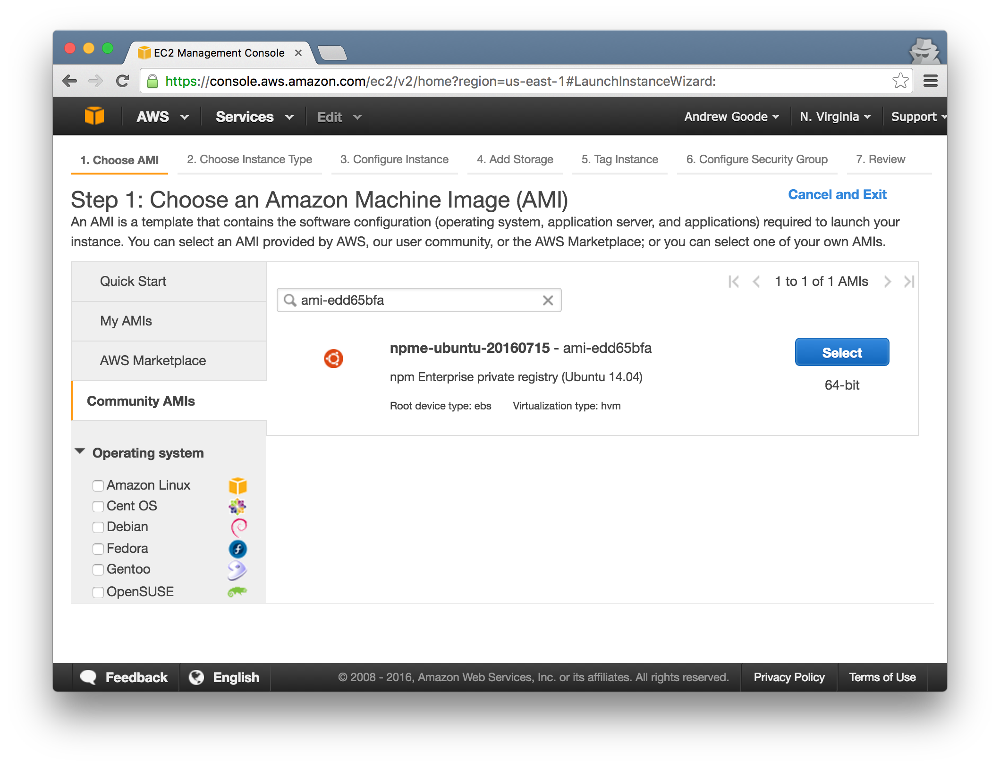
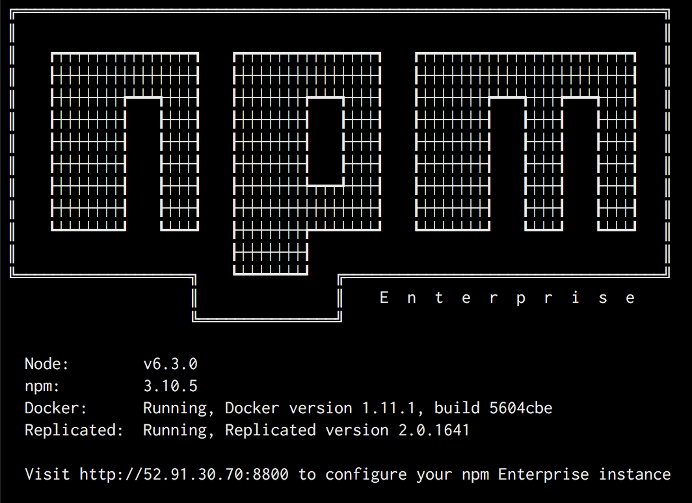

Running npm Enterprise in AWS
Using our AMI, there is nothing to install. Just launch an instance, configure it using the npm Enterprise admin web UI, and you’re done. It’s a true point-and-click solution for sharing and managing private JavaScript packages within your company.
Let’s take a quick look at the details:
1. Find the AMI in your preferred AWS region
We have AMIs for the majority of AWS regions. When you launch a new instance in the AWS EC2 Console, find the right one by searching for the relevant AMI ID under the Community AMIs tab. Note that new AMI versions are published about every month and include the date of publication in the AMI name.
Here’s a list of the AMI IDs by region:
ap-northeast-1(Tokyo)ami-8f2050e9ap-northeast-2(Seoul)ami-5f8e2c31ap-south-1(Mumbai)ami-232d7f4cap-southeast-1(Singapore)ami-13aded6fap-southeast-2(Sydney)ami-248c7646ca-central-1(Canada)ami-fd48cc99eu-central-1(Frankfurt)ami-1c4f2873eu-west-1(Ireland)ami-b199edc8eu-west-2(London)ami-80f411e7eu-west-3(Paris)ami-7a942207sa-east-1(Sao Paulo)ami-078ac46bus-east-1(N. Virginia)ami-520f1b28us-east-2(Ohio)ami-c74074a2us-west-2(Oregon)ami-3dcdc35dus-west-2(Oregon)ami-d85ed8a0
Make sure the AMI comes from owner 666882590071.
If you don’t see your preferred region in the list above, contact our support team, and we’ll get one created for you!

2. Launch it
When you launch an instance of the AMI, you’ll need to:
- Choose an instance type: use
m3.largeor better. - Enter a storage size: must be at least 16 GB; we recommend 75-150 GB for typical installs.
- Select or create a security group: open ports
22(ssh),8080(registry),8081(website), and8800(npm Enterprise admin UI). - Select or create a
.pemkey pair: this allows you tosshinto your server instance.
It’s not necessary, but if you’d prefer to attach an EBS volume for registry data that is separate from the root volume, you can. However, the root EBS volume cannot be smaller than 16 GB.
3. Configure and start the appliance
You don’t have to, but you can ssh into your EC2 instance to make sure it’s up and running. If you do, you should see a welcome message like the following:

Open your favorite web browser, access your server on port 8800, and follow the prompts to configure and start your appliance.
For more information on configuring npm Enterprise, see Server Configuration.
That’s it! Once you’ve configured and started the appliance, your private npm registry and website are ready for use. See this document for configuring your npm CLI to use your new private registry.